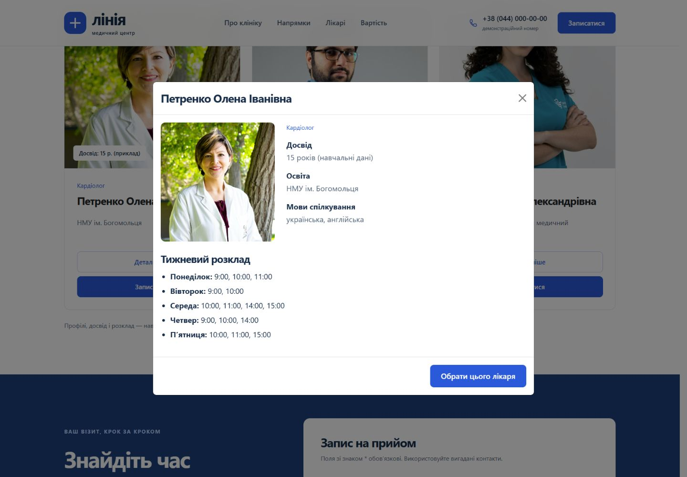

Варіант 9: сайт медичної клініки.
Виконавець: ____________________
Група: ____________________
Опанувати створення інтерактивних сторінок: роботу з DOM, подіями, JSON і Fetch API, динамічне відображення даних, валідацію та інтеграцію з Bootstrap.
Створено окрему копію сайту «Лінія» з ЛБ2. Збережено Bootstrap 5.3.0, адаптивну сітку, кольори, фотографії, навігацію та інформаційні секції. Використано HTML5, CSS3 і JavaScript без додаткових фреймворків. Дані лікарів та послуг винесено в doctors.json і services.json.
| Компонент | Рішення |
|---|---|
| Завантаження | Паралельний fetch через Promise.all, async/await, response.ok, перевірка схеми, таймаут, повідомлення й повторна спроба. |
| Каталог лікарів | Картки з JSON, фільтрація за спеціальністю, делегування кліків, профіль у Bootstrap Modal. |
| Запис | Лікар, сумісна послуга, дата та вільні години з тижневого розкладу. Минулі й зайняті слоти виключаються. |
| Валідація | ПІБ із щонайменше трьох слів, телефон +380 та дев’ять цифр, перевірка дати, часу й необов’язкового e-mail. Помилки під полями. |
| Підтвердження | Перегляд даних у модальному вікні; повторна перевірка часу; збереження лише ID лікаря, дати та часу в localStorage. |
| Калькулятор | Чекбокси послуг із JSON, підсумок через reduce, скидання та window.print з окремим CSS для друку. |
| Консультант | Сценарний діалог: вибір теми, пропозиція напрямку, перехід до заповненої форми. |
Перевірено фільтр, модальні вікна, запис і збереження зайнятості після перезавантаження, відсутність часу в неробочий день та неправильні контактні дані. Сума консультації кардіолога 950 грн і ЕКГ 450 грн становить 1400 грн; скидання повертає 0 грн. Консультант за темою огляду дитини підставляє педіатра й відповідну послугу.
Окремий тимчасовий сервер імітував порожні масиви, HTTP 404 та некоректний JSON. Сайт показує повідомлення, а форма запису недоступна. Перевірено viewport 390, 820 і 1440 px без горизонтального переповнення та мобільне меню. Фінальний index.html пройшов W3C Nu Validator без помилок і попереджень; JavaScript пройшов node --check. Деталі наведено в README.md.
Друк реалізований через браузерний діалог і @media print; фізичний принтер не перевірявся. Перевірка розмірів вікна не замінює тестування на фізичних телефонах. Зовнішня перевірка CSS цього варіанта не виконувалася.

Поточний код підготовлено в Codex. Фактичний діалог у Google Gemini не виконувався. Для цього етапу підготовлено GEMINI_PROMPTS.md; реальні відповіді та власні ітерації потрібно додати після виконання. Не слід подавати ці промпти як доказ завершеної роботи в Gemini.
Репозиторій: заповнити після публікації.
GitHub Pages: заповнити після публікації.
Статичний макет клініки розширено роботою з JSON, асинхронним завантаженням, фільтрацією, обробкою подій, перевіркою форми та оновленням DOM. Реалізовано навчальну модель запису, калькулятор і сценарного консультанта. Для спільного реального розкладу потрібна серверна частина; локальна демонстрація її не замінює.